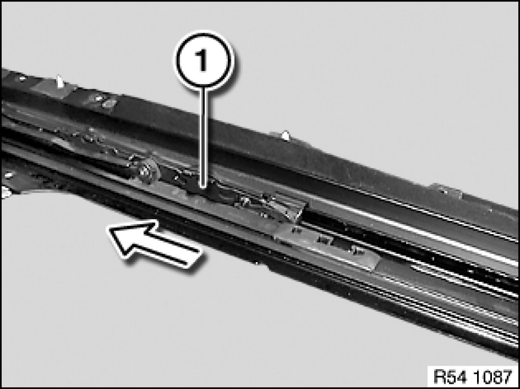
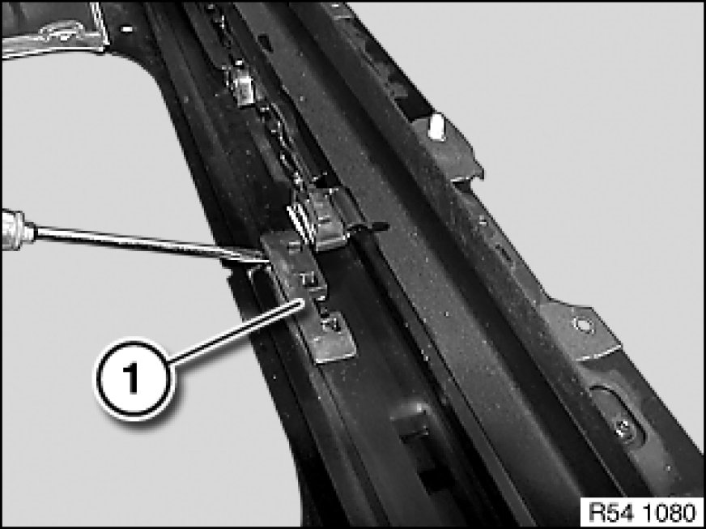
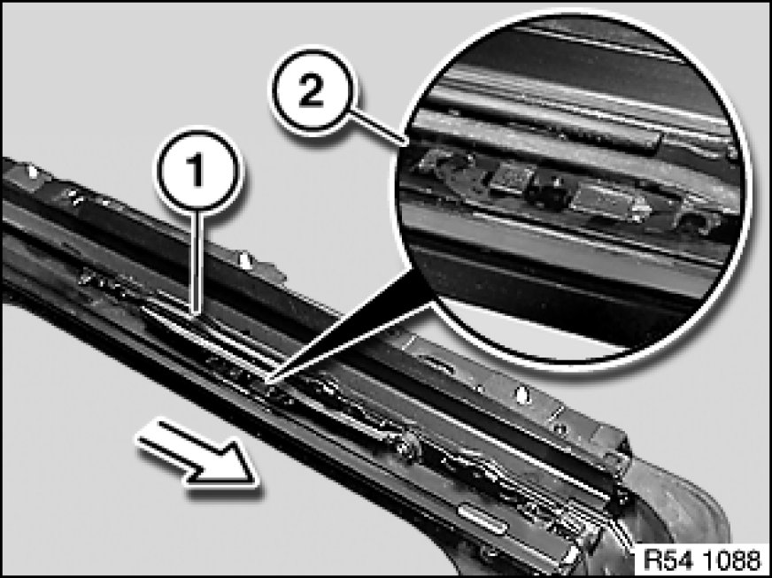
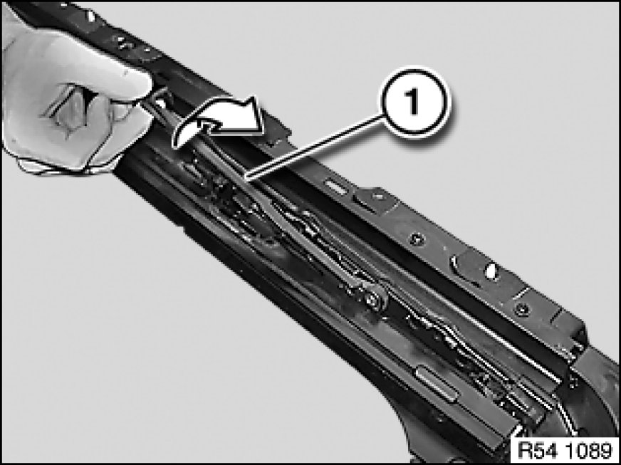
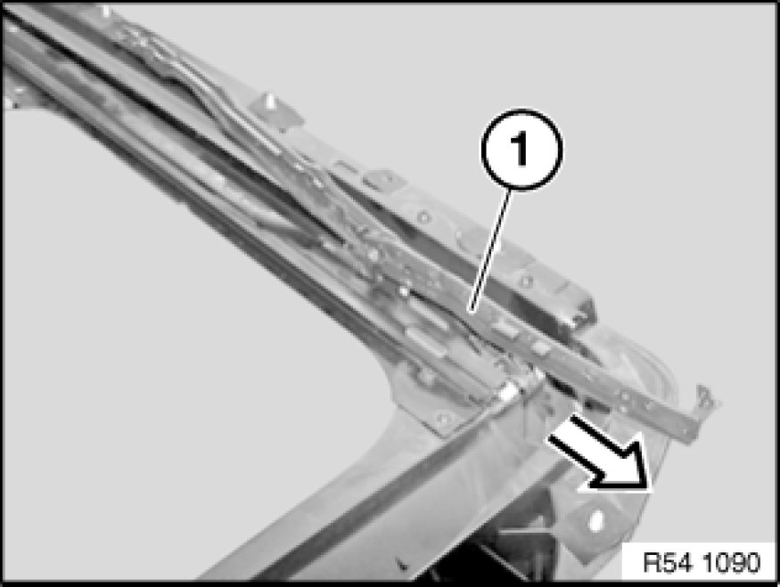
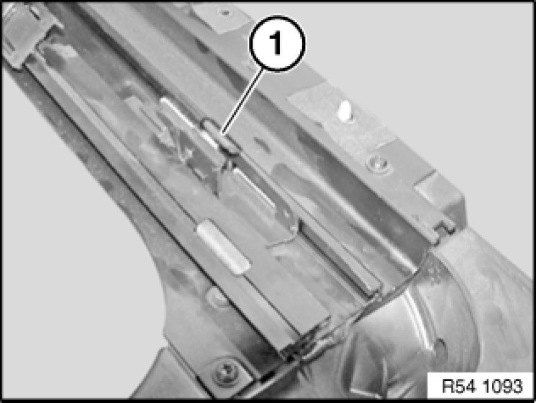
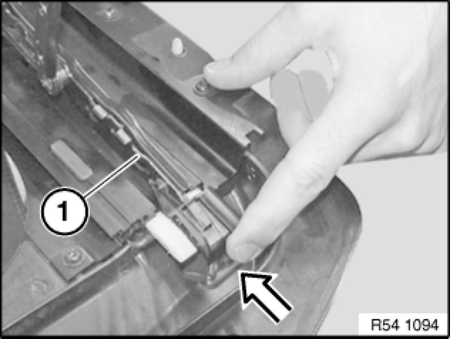
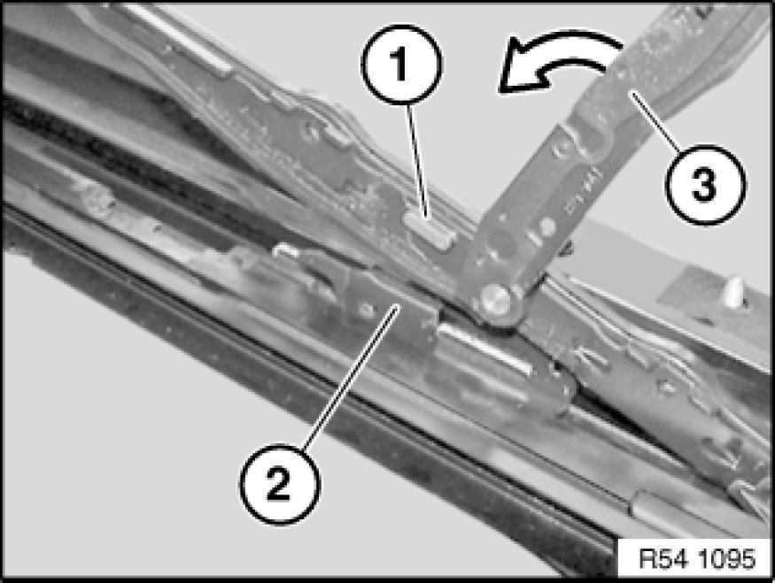
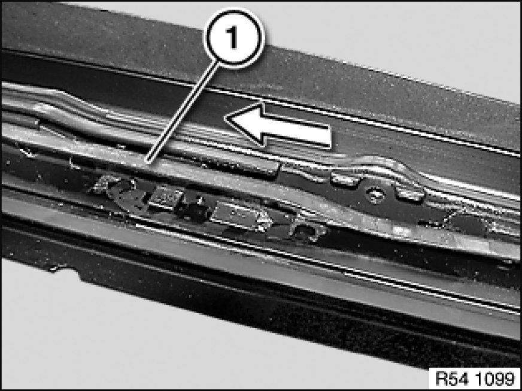
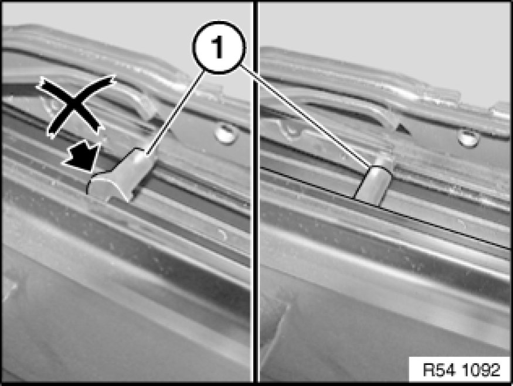

54 12 170 Removing and Installing/Replacing Connecting Element Pair For Glass Slide/Tilt Sunroof
54 12 170 - Removing and installing/replacing connecting element pair for glass slide/tilt sunroof

Necessary preliminary tasks:
- Remove glass slide/tilt sunroof lid Service and Repair
- Remove rain gutter 54 12 138 Removing and Installing/Replacing Rain Gutter for Glass Slide/Tilt Sunroof
- Remove wind deflector 54 12 497 Removing and Installing/Replacing Wind Deflector for Glass Slide/Tilt Sunroof

Slide connecting element (1) back.

Lever out garage stop (1) with a screwdriver.

Advance connecting element (1) up to opening (2).

Lever control lever (1) out of guide rail and turn.

Advance connecting element (1) up to end fitting.
Raise connecting element (1) and slide forwards out of guide.
Feed connecting element (1) out of carriage.

Carriage (1) for connecting element in guide rail.

Installation:
Keep to sequence of installation.

If necessary, move carriage towards rear slightly.
Insert connecting element (1) into guide rail.

Engage connecting element (1) in carriage (2).
Turn control lever (3).

Insert control lever (1) in opening.

Note:
Spacer (1) of control lever must be situated in guide channel.
Move connecting element towards rear.
Clip in garage.
Assemble glass slide/tilt sunroof and carry out function check.
Initialize Testing and Inspection glass slide/tilt sunroof.